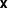
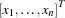
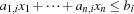

3.2 The Finite Domain Model
The finite domain model is a one-to-one translation of the LP model. Every problem variable of  is represented by a finite domain variable. The inequalities are expressed by appropriate finite domain constraints.
declare
fun {KnapsackFD Problem}
NumProducts = {Length Problem.profit}
Resources = Problem.resources
in
proc {$ Sol}
sol(maxprofit: MaxProfit = {FD.decl}
products: Products = {FD.list NumProducts 0#FD.sup})
= Sol
in
MaxProfit = {FD.sumC Problem.profit Products '=:'}
{ForAll {Arity Resources}
proc {$ ResourceName}
Resource = Resources.ResourceName
in
{FD.sumC Resource.npp Products '=<:' Resource.ta}
end}
{FD.distribute naive Products}
end
end
The function KnapsackFD returns a procedure abstracting the script. The solution variable Sol of the script is constrained to a record. The record provides access to the individual quantities of the individual products (under feature products) to obtain a maximum profit (under feature maxprofit).
The variable Products refers to a list of finite domain problem variables (corresponding to  in the LP model) and MaxProfit is constrained to be the scalar product of the Product variable and the profit vector for the problem specification (see Section 3.1).
The ForAll iterator imposes the inequality constraints  to the problem variables. The distribution strategy is straightforwardly chosen to naive. Experimenting with first fail (ff) produced even worse results.
Solving the problem by calling
{ExploreBest {KnapsackFD Problem}
proc {$ O N} O.maxprofit <: N.maxprofit end}produces the following search tree.